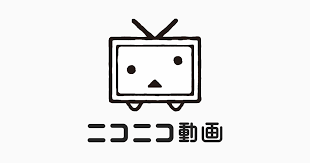

ニコニコ動画大規模なサイバー攻撃、一時サーバ停止
KADOKAWAに大規模被害

今年6月8日に大手出版社KADOKAWAグループが大規模なサイバー攻撃を受けた。それに伴い、ニコニコ（ニコニコ動画やニコニコ生放送など）運営が一時サービス停止を発表した。 発見時当初、グループ内の複数サーバにアクセスできない障害が発生していることが検知された。不具合の原因がランサムウェアを含むサイバー攻撃であることを確認。グループ企業のデータセンター内におけるサーバー間通信の切断や、サーバーのシャットダウンを開始した。
続くサイバー攻撃
KADOKAWAグループ全体の業務サーバーなども停止させたことで業務にも影響が出た。書籍などの受注停止や生産量の減少、物流の遅延が発生したほか、一部の取引先への支払いが遅延する可能性が生じた。27日には「BlackSuit」を名乗るハッカー集団がダークウェブ上のサイトに犯行声明を公表。真偽は不明だが、KADOKAWAグループのネットワークの問題を突き、1.5テラバイト（TB）のデータを盗んだと主張した。